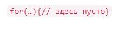

1. С помощью цикла while вывести все простые числа в промежутке от 0 до 100.
Решение из script.js выведено в consol.log
2. С этого урока начинаем работать с функционалом интернет-магазина. Предположим, есть сущность корзины. Нужно реализовать функционал подсчета стоимости корзины в зависимости от находящихся в ней товаров.
3. Товары в корзине хранятся в массиве. Задачи:
a) Организовать такой массив для хранения товаров в корзине;
b) Организовать функцию countBasketPrice, которая будет считать стоимость корзины.
Решение из script.js выведено в consol.log
3.*Вывести с помощью цикла for числа от 0 до 9, не используя тело цикла. Выглядеть это должно так:

Решение из script.js выведено в consol.log
4. *Нарисовать пирамиду с помощью console.log, как показано на рисунке, только у вашей пирамиды должно быть 20 рядов, а не 5: